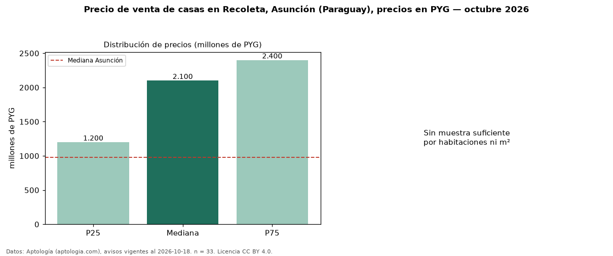

Precio de venta de casas en Recoleta, Asunción (Paraguay), precios en PYG — octubre 2026
En Recoleta, Asunción (Paraguay), la mediana de precio de venta de casas es PYG 2,10 mil millones, según 33 avisos vigentes. Eso es 115 % por encima de la mediana de Asunción para casas (PYG 975 millones). Por precio mediano es el puesto 1 de 18 barrios de Asunción con al menos 30 avisos de casas en venta (PYG): entre las más caras. El segmento con más oferta es el de 3 o más habitaciones (28 avisos, mediana PYG 2,10 mil millones). La mitad central de los avisos va de PYG 1,20 mil millones a PYG 2,40 mil millones (razón 2,0), una dispersión alta. Datos: Aptología (aptologia.com), CC BY 4.0 — https://www.aptologia.com/py/venta/asuncion/recoleta. Archivos: PDF, CSV con las cifras y gráfica PNG.

| Avisos únicos | 33 |
|---|---|
| Percentil 25 | COP 1.200.000.000 |
| Mediana | COP 2.100.000.000 |
| Percentil 75 | COP 2.400.000.000 |
Fuente: avisos vigentes de portales inmobiliarios recopilados por Aptología, deduplicados (mínimo 30 avisos únicos por celda). Precios pedidos, no cerrados. Fecha: 2026-10-18.